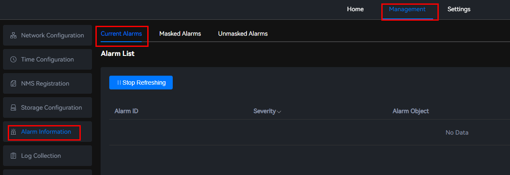
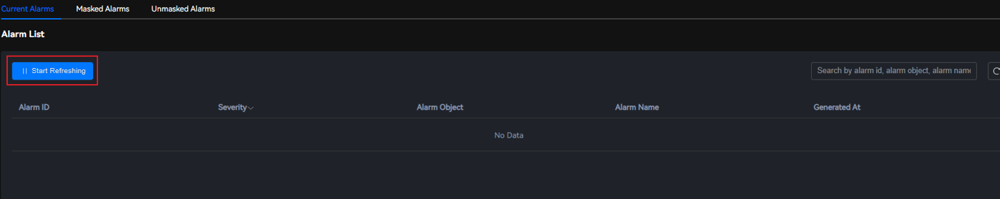

Scenarios
When faults occur in the system, this page displays only the unmasked alarms that are reported by the system.
Procedure
- Choose .
On the Current Alarms page, you can view the number of alarms reported by the system, alarm IDs, severities, alarm objects, alarm names, and generation time.
Figure 1 Current Alarms
 - Click the alarm ID in the row of an alarm to view the handling suggestion of the alarm.Figure 2 Suggestions

- (Optional) Click Start Refreshing to refresh alarm information.Figure 3 Refreshing alarm information

After clearing the alarm according to the alarm handling suggestions, you can click Start Refreshing to check whether the alarm is cleared.